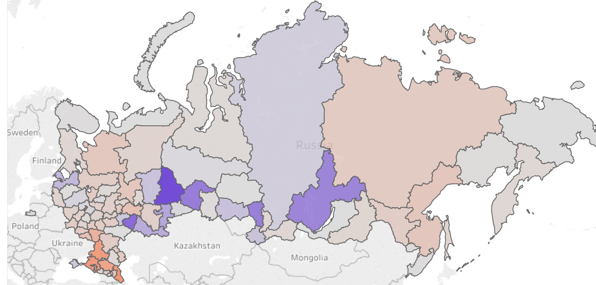

Принцип выделения бюджетных средств и почему считаем его неправильным
Есть большой разброс коэффициента по регионам. Если коэффициент сильно отличается от однерки, это значит, что он либо недофинпансирован, либо перефинансирован. У нас есть возможность показать, какой из двух вариантов в каждом регион. Чем теплее регион, тем более он перефинансирован. Чем холоднее, тем менее.
На самом деле логичней было бы расходовать бюджетные средства, исходя из количества зараженных ВИЧ. Если же проанализировать текущее распределение средств по такой схеме, т.е. относительно реального количества зараженных по регионам, мы увидим регионы с недостаточным финансированием и регионы с перефинансированием. Коэфициент попадания выделенных средств в необходимый к профилактике регион рассчитывался как дельта между процентными соотношениями выделенных средств на регион от общей суммы на все регионы, и зараженных в регионе от общего количества зараженных по стране. На лицо неэффективное расходование бюджетных средств. Но стоит обратить внимание, что мы работаем со статистикой, предаставленной центрами СПИД регионов, которая может не в полном объеме отражать реальное положение дел.